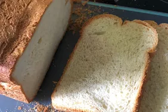

Best Bread Machine Bread

This bread machine recipe is easy and foolproof. It makes a very soft and tasty loaf of bread with a flaky crust.
Bread Machine Bread Ingredients
- Yeast: This recipe, which yields one loaf, starts with one package of bread machine yeast.
- Water and sugar: Activate the yeast in warm water and sugar.
- Oil: Vegetable oil tenderizes the gluten and ensures a soft, not tough, loaf.
- Bread flour: Bread flour has more protein than all-purpose flour, which results in a structured bread with the perfect rise.
- Vanilla: Vanilla extract enhances the overall flavor of this simple quick bread.
- Salt: Salt not only contributes to the flavor of the bread, it strengthens the gluten and slows the rate of yeast fermentation.
How to Make Bread In a Bread Machine
Here’s a brief overview of what you can expect when you make homemade white bread in a bread machine:
- Activate the yeast in the pan of the bread machine.
- Add the remaining ingredients.
- Select the Basic or White Bread setting, then press Start.
- Cool in the pan for five minutes after the cycle is done, then cool on a rack.